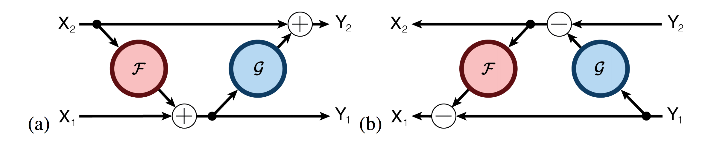

Aidan Gomez*, Mengye Ren*, Raquel Urtasun, Roger B. Grosse
Department of Computer Science, University of Toronto, Toronto ON, CANADA
*Equal contribution

Deep residual networks (ResNets) have significantly pushed forward the state-of-the-art on image classification, increasing in performance as networks grow both deeper and wider. However, memory consumption becomes a bottleneck, as one needs to store the activations in order to calculate gradients using backpropagation. We present the Reversible Residual Network (RevNet), a variant of ResNets where each layer's activations can be reconstructed exactly from the next layer's. Therefore, the activations for most layers need not be stored in memory during backpropagation. We demonstrate the effectiveness of RevNets on CIFAR-10, CIFAR-100, and ImageNet, establishing nearly identical classification accuracy to equally-sized ResNets, even though the activation storage requirements are independent of depth.
[pdf]
[link]
@inproceedings{gomez17revnet,
author = {Aidan N. Gomez and
Mengye Ren and
Raquel Urtasun and
Roger B. Grosse},
title = {The Reversible Residual Network: Backpropagation without
Storing Activations}
booktitle = {NIPS},
year = {2017},
}